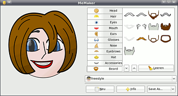
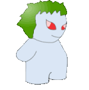

MeMaker
Dieser Artikel wurde für die folgenden Ubuntu-Versionen getestet:
Ubuntu 14.04 Trusty Tahr
Zum Verständnis dieses Artikels sind folgende Seiten hilfreich:
Bei MeMaker  handelt es sich um ein kleines Programm, welches das Erstellen von Avataren, kleinen Bildern, unter denen Anwender im Internet auftreten, sehr vereinfacht. Zur Bedienung sind keine Kenntnisse im Bereich der Bildbearbeitung notwendig, man kann im Notfall auch ohne konkrete Vorstellungen an die Erstellung gehen, indem man einfach solange herumprobiert, bis einem der entstandene Avatar gefällt.
handelt es sich um ein kleines Programm, welches das Erstellen von Avataren, kleinen Bildern, unter denen Anwender im Internet auftreten, sehr vereinfacht. Zur Bedienung sind keine Kenntnisse im Bereich der Bildbearbeitung notwendig, man kann im Notfall auch ohne konkrete Vorstellungen an die Erstellung gehen, indem man einfach solange herumprobiert, bis einem der entstandene Avatar gefällt.
Installation¶
MeMaker kann aus den Paketquellen installiert [1] werden.
memaker (universe)
 mit apturl
mit apturl
Paketliste zum Kopieren:
sudo apt-get install memaker
sudo aptitude install memaker
Das Programm kann mit memaker gestartet werden [2].

Bedienung¶
Die Oberfläche ist sehr einfach gehalten. Man wählt den Typ des Avatars, den man erstellen möchte, aus der Dropdown-Liste. Danach kann man über die Tabs die einzelnen Bestandteile des Avatars anzeigen lassen und per  -Klick hinzufügen. Das Vorschaubild auf der linken Seite des Fensters wird sofort aktualisiert.
-Klick hinzufügen. Das Vorschaubild auf der linken Seite des Fensters wird sofort aktualisiert.
| Avatar-Typen von MeMaker | ||
| Artistic | Animal-Crackers | Coco Head |
|  | ||
| Plazmoid | Plastidudes | Freestyle |
Mögliche Bestandteile eines Avatars sind:
Kopf (Head)
Haar (Hair)
Augen (Eyes)
Mund (Mouth)
Ohren (Ears)
Brille (Glasses)
Nase (Nose)
Augenbrauen (Eyebrows)
Kopfbedeckung (Hat)
Ausstaffierung (Accessories)
Bart (Beard)
Nicht bei jedem Avatar-Typen sind alle diese Bestandteile nutzbar!
Der fertige Avatar kann in den Formaten
SVG (skalierbar)
PNG (ca. 400x400 Pixel)
BMP (ca. 400x400 Pixel, keine Transparenz)
Gnome Avatar (Speichern im GNOME-Profil)
Launchpad Logo (PNG, 64x64 Pixel)
Launchpad Mugshot (PNG, 192x192 Pixel)
gespeichert werden.
- Erstellt mit Inyoka
-
 2004 – 2017 ubuntuusers.de • Einige Rechte vorbehalten
2004 – 2017 ubuntuusers.de • Einige Rechte vorbehalten
Lizenz • Kontakt • Datenschutz • Impressum • Serverstatus -
Serverhousing gespendet von